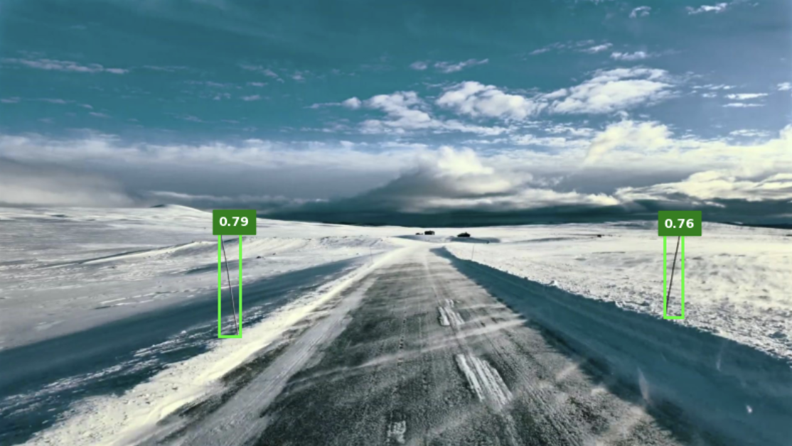

Vebjørn Haugland
I am a master's student in Computer Science at NTNU, graduating in 2026. My academic focus is in theoretical computer science and machine learning, which has led me to exchange studies at MIT and ETH Zürich. I am currently working on my master's thesis on uncertainty-aware object detection in collaboration with DNV. I am fluent in PyTorch and have practical experience working with transformer-based architectures and convolutional neural networks. In my spare time, I explore reinforcement learning.
I am currently looking for relevant positions - reach out if you want to connect!

Massachusetts Institute of Technology (MIT)
Algorithms and Theoretical ML. Fulbright Scholar.
ETH Zürich
Probabilistic AI, Machine Learning and Big Data.
NTNU
Specialization in AI.
Projects

Uncertainty-aware Object Detection with DNV
Building an uncertainty-aware object detector trained on DNV datasets.
Snowpole Object Detection Challenge
Ranked 1st place on the leaderboard for the snowpole object detection challenge.
Smile Detection
Built an InceptionV3-based classifier on CelebA dataset. Received a score of 100/100 and Grade A.


DETR from scratch
Coded the popular DEtection TRansformer architecture by Facebook AI Research (FAIR) from scratch and made a YouTube video of it.
Internships
DNV
Combined mathematical optimization and Monte Carlo sampling to predict ship operating costs.

Haugesund Municipality
Developed property tax analysis software using Java, PostgreSQL, and Microsoft Azure.
Norsk Helsenett SF
Worked in .NET and C# to generate test data for a large-scale system.
Work Experience
NTNUI Sprint
Maintained and developed IT solutions for NTNUI, the sports organization at NTNU, with approximately 15,000 active members.
The Royal Norwegian Navy
Compulsory military service. Serving as a guard commander, I was responsible for 6 soldiers and the training of new contingents.
Teaching
NTNU
- TDT4120 - Algorithms and Data Structures, Fall '25
- TDT4100 - Object-Oriented Programming in Java, Spring '23
MentorNorge
Provided personalized math tutoring for upper secondary high school students. Helped students achieve significant improvements, reaching top-tier grades.